To Summer Commercial Project
2021-2023
During my tenure at the Chinese fragrance brand To Summer, I specialized in the creative and strategic planning of offline shop designs. My responsibilities encompassed a broad range of innovative projects, including the curation of collaborative art exhibitions, the conceptualization and realization of art installations, and the design of pop-up stores as well as window displays. Each project was crafted to enhance the sensory experience of the brand, blending aesthetics and culture with the essence of To Summer's fragrances.

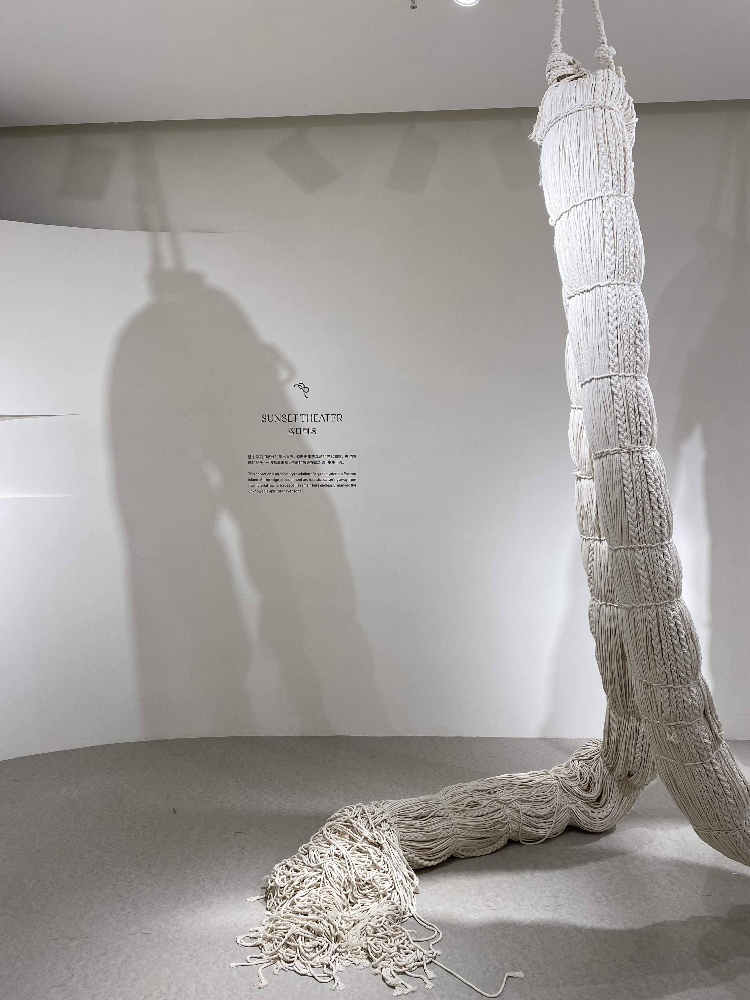
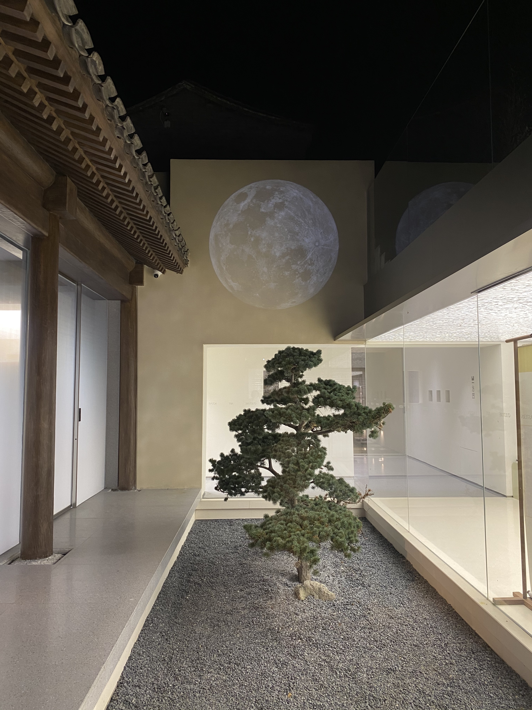
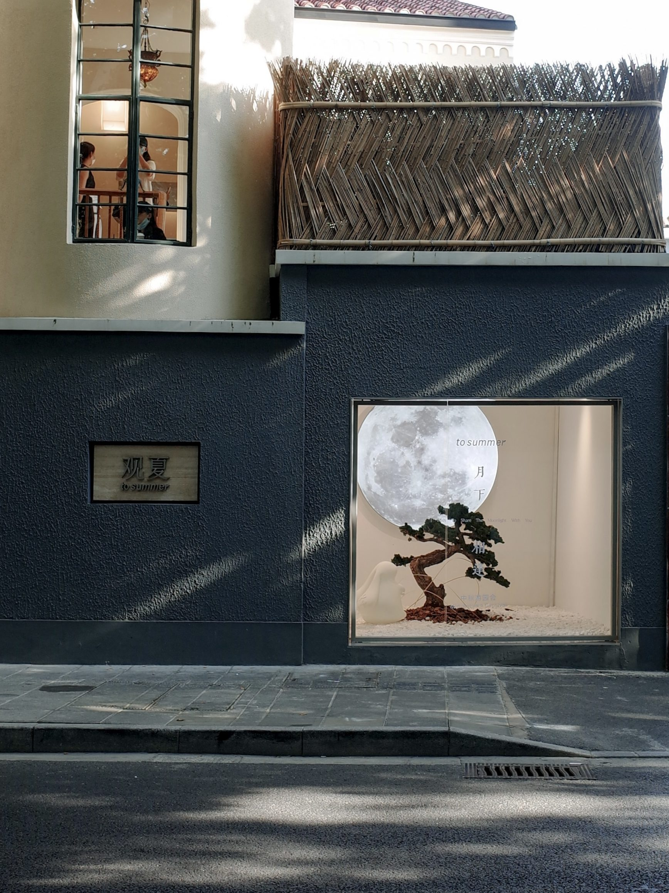
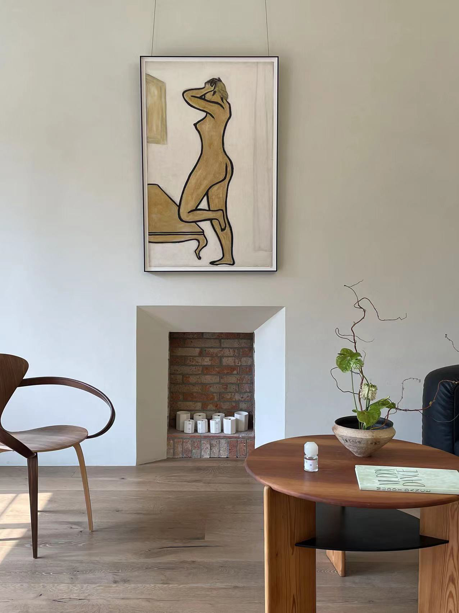
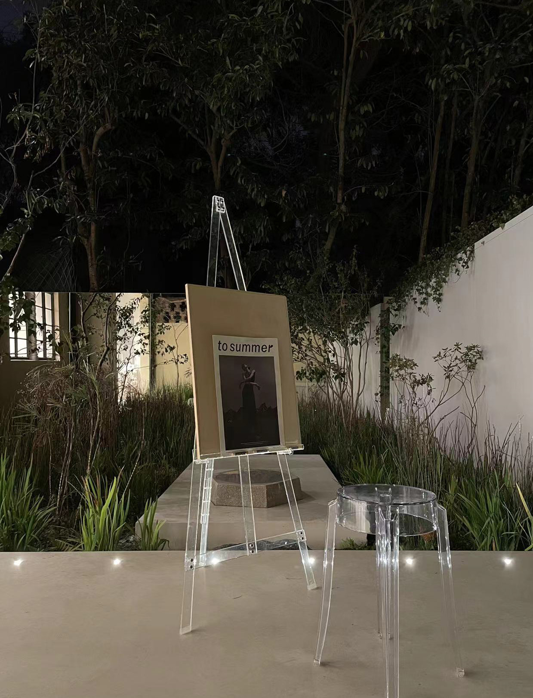
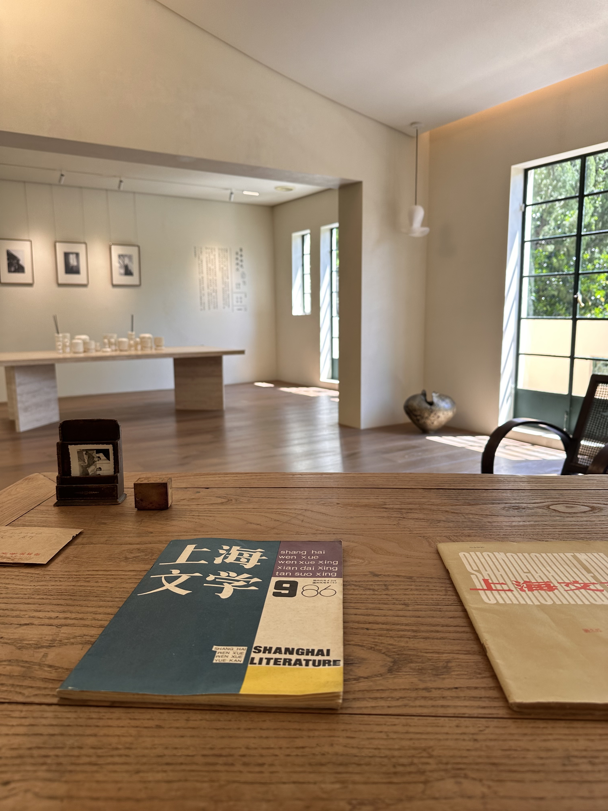
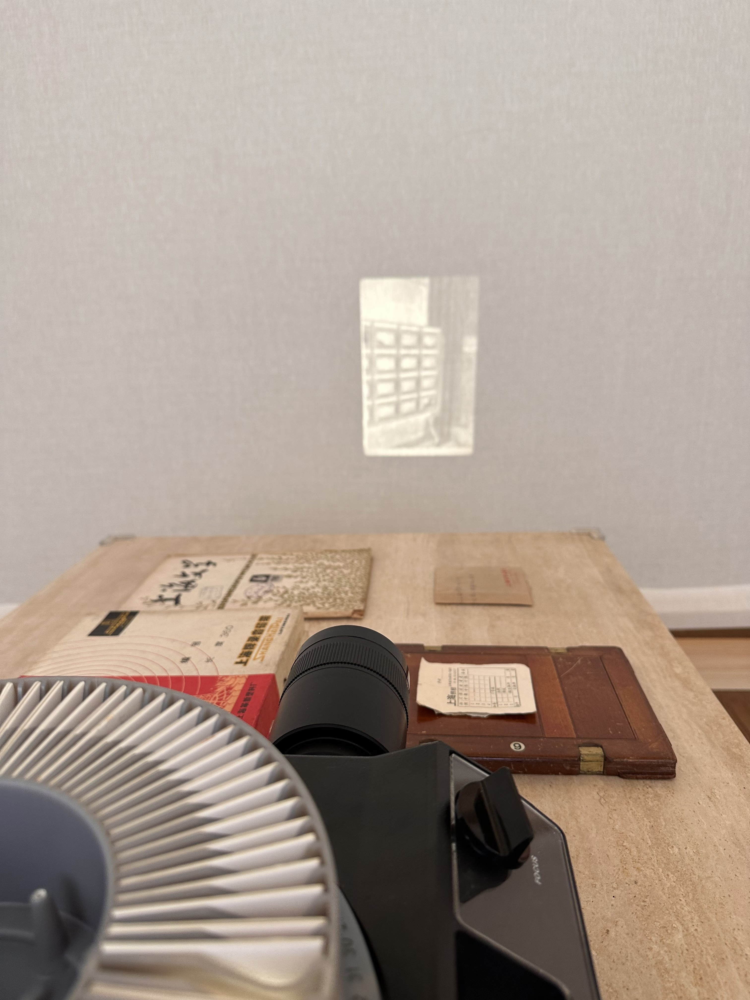
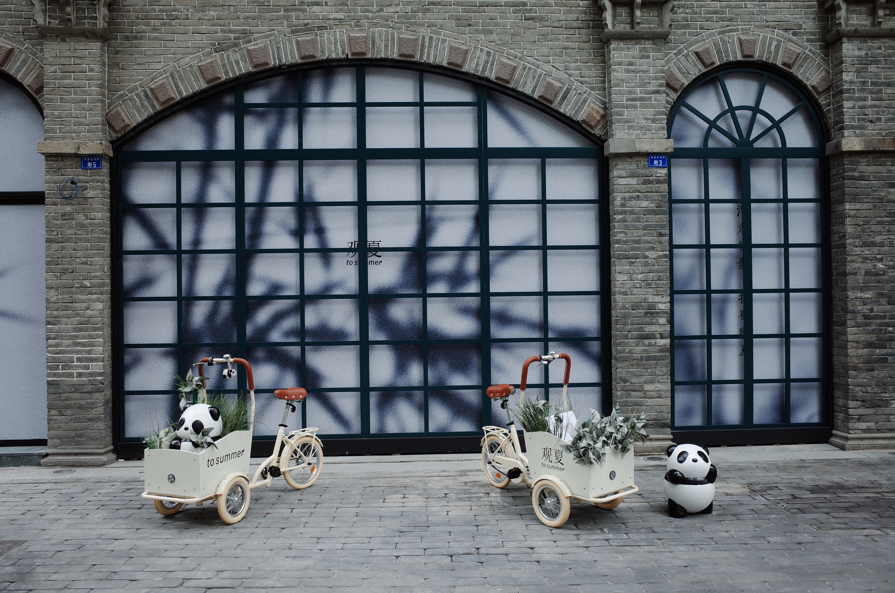
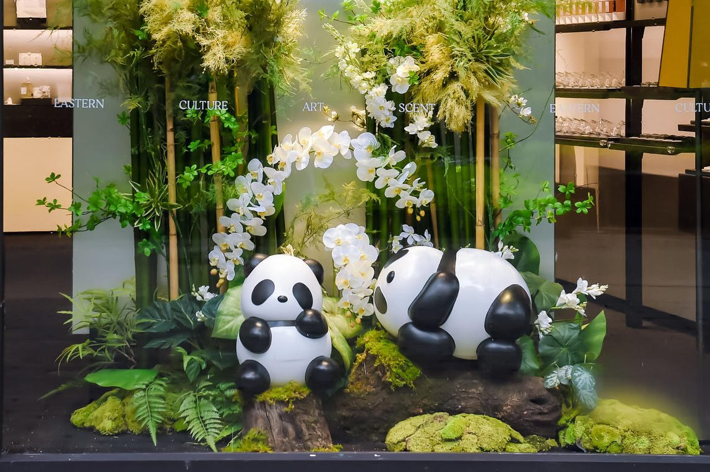
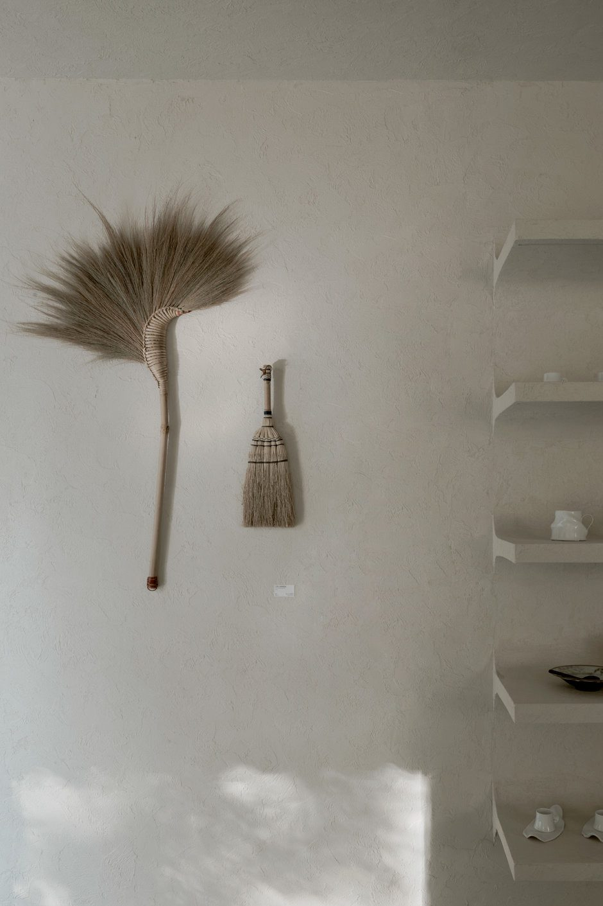
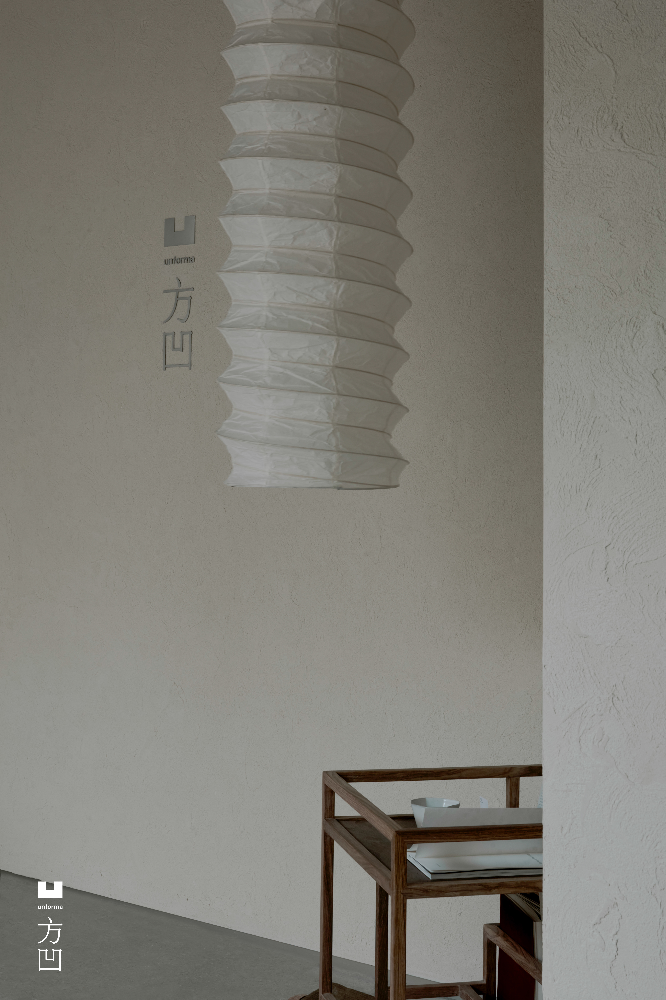